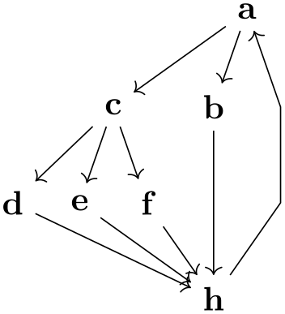
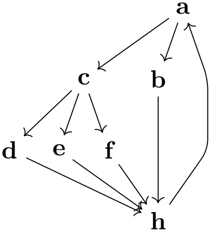
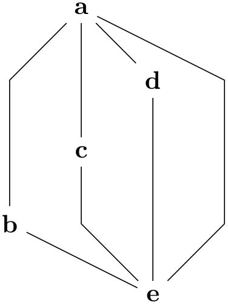
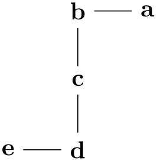
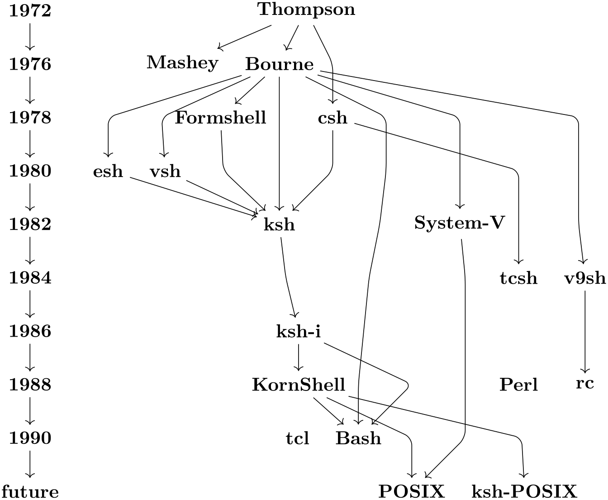

The TikZ and PGF Packages
Manual for version 3.1.10
Graph Drawing
31 Graph Drawing Algorithms: Layered Layouts¶
by Till Tantau and Jannis Pohlmann
-
Graph Drawing Library layered ¶
-
• Jannis Pohlmann, Configurable Graph Drawing Algorithms for the TikZ Graphics Description Language, Diploma Thesis, Institute of Theoretical Computer Science, Universität zu Lübeck, 2011.
Available online via http://www.tcs.uni-luebeck.de/downloads/papers/2011/
2011-configurable-graph-drawing-algorithms-jannis-pohlmann.pdf
(Note that since the publication of this thesis some option names have been changed. Most noticeably, the option name layered drawing was changed to layered layout, which is somewhat more consistent with other names used in the graph drawing libraries. Furthermore, the keys for choosing individual algorithms for the different algorithm phases, have all changed.) -
1. Cycle removal.
-
2. Layer assignment (sometimes called node ranking).
-
3. Crossing minimization (also referred to as node ordering).
-
4. Node positioning (or coordinate assignment).
-
5. Edge routing.
\usegdlibrary{layered} %
LaTeX
and plain
TeX
\usegdlibrary[layered] % ConTeXt
A “layered” layout of a graph tries to arrange the nodes in consecutive horizontal layers (naturally, by rotating the graph, this can be changed in to vertical layers) such that edges tend to be only between nodes on adjacent layers. Trees, for instance, can always be laid out in this way. This method of laying out a graph is especially useful for hierarchical graphs.
The method implemented in this library is often called the Sugiyama method, which is a rather advanced method of assigning nodes to layers and positions on these layers. The same method is also used in the popular GraphViz program, indeed, the implementation in TikZ is based on the same pseudo-code from the same paper as the implementation used in GraphViz and both programs will often generate the same layout (but not always, as explained below). The current implementation is due to Jannis Pohlmann, who implemented it as part of his Diploma thesis. Please consult this thesis for a detailed explanation of the Sugiyama method and its history:
The Sugiyama methods lays out a graph in five steps:
It turns out that behind each of these steps there lurks an NP-complete problem, which means, in practice, that each step is impossible to perform optimally for larger graphs. For this reason, heuristics and approximation algorithms are used to find a “good” way of performing the steps.
A distinctive feature of Pohlmann’s implementation of the Sugiyama method for TikZ is that the algorithms used for each of the steps can easily be exchanged, just specify a different option. For the user, this means that by specifying a different option and thereby using a different heuristic for one of the steps, a better layout can often be found. For the researcher, this means that one can very easily test new approaches and new heuristics without having to implement all of the other steps anew.
31.1 The Modular Sugiyama Method¶
-
/graph drawing/layered layout=⟨string⟩ ¶
The layered layout is the key used to select the modular Sugiyama layout algorithm. This algorithm consists of five consecutive steps, each of which can be configured independently of the other ones (how this is done is explained later in this section). Naturally, the “best” heuristics are selected by default, so there is typically no need to change the settings, but what is the “best” method for one graph need not be the best one for another graph.
As can be seen in the first example, the algorithm will not only position the nodes of a graph, but will also perform an edge routing. This will look visually quite pleasing if you add the rounded corners option:
Examples

\tikz \graph [layered layout, sibling distance=7mm]
{
a
->
{
b,
c
->
{ d, e, f
}
} ->
h
->
a
};

\tikz [rounded corners] \graph [layered layout, sibling distance=7mm]
{
a
->
{
b,
c
->
{ d, e, f
}
} ->
h
->
a
};
-
/graph drawing/minimum layers=⟨number⟩(initially 1) ¶
The minimum number of levels that an edge must span. It is a bit of the opposite of the weight parameter: While a large weight causes an edge to become shorter, a larger minimum layers value causes an edge to be longer.
Example

-
/graph drawing/same layer(style) ¶
The same layer collection allows you to enforce that several nodes a on the same layer of a layered layout (this option is also known as same rank). You use it like this:
Examples

\tikz \graph [layered layout] {
a
--
b
--
c
--
d
--
e;
{ [same layer] a, b
};
{ [same layer] d, e
};
};

\tikz [rounded corners] \graph [layered layout] {
1972
->
1976
->
1978
->
1980
->
1982
->
1984
->
1986
->
1988
->
1990
->
future;
{ [same layer] 1972, Thompson
};
{ [same layer] 1976, Mashey, Bourne
},
{ [same layer] 1978, Formshell, csh
},
{ [same layer] 1980, esh, vsh
},
{ [same layer] 1982, ksh, "System-V"
},
{ [same layer] 1984, v9sh, tcsh
},
{ [same layer] 1986, "ksh-i"
},
{ [same layer] 1988, KornShell
,Perl, rc
},
{ [same layer] 1990, tcl, Bash
},
{ [same layer] "future", POSIX, "ksh-POSIX"
},
Thompson
->
{ Mashey, Bourne, csh
->
tcsh},
Bourne
->
{ ksh, esh, vsh, "System-V", v9sh
->
rc, Bash},
{ "ksh-i", KornShell
} ->
Bash,
{ esh, vsh, Formshell, csh
} ->
ksh,
{ KornShell, "System-V"
} ->
POSIX,
ksh
->
"ksh-i"
->
KornShell
->
"ksh-POSIX",
Bourne
->
Formshell,
{ [edge={draw=none}]
Bash
->
tcl,
KornShell
->
Perl
}
};
31.2 Cycle Removal¶
The Sugiyama method works only on directed acyclic graphs. For this reason, if the input graph is not (yet) acyclic, a number of edges need to be redirected so that acyclicity arises. In the following, the different options that allow you to fine-tune this process are documented.
-
/graph drawing/depth first cycle removal=⟨string⟩ ¶
Selects a cycle removal algorithm that is especially appropriate for graphs specified “by hand”. When graphs are created by humans manually, one can make assumptions about the input graph that would otherwise not be possible. For instance, it seems reasonable to assume that the order in which nodes and edges are entered by the user somehow reflects the natural flow the user has had in mind for the graph.
In order to preserve the natural flow of the input graph, Gansner et al. propose to remove cycles by performing a series of depth-first searches starting at individual nodes in the order they appear in the graph. This algorithm implicitly constructs a spanning tree of the nodes reached during the searches. It thereby partitions the edges of the graph into tree edges and non-tree edges. The non-tree edges are further subdivided into forward edges, cross edges, and back edges. Forward edges point from a tree nodes to one of their descendants. Cross edges connect unrelated branches in the search tree. Back edges connect descendants to one of their ancestors. It is not hard to see that reversing back edges will not only introduce no new cycles but will also make any directed graph acyclic. Gansner et al. argue that this approach is more stable than others in that fewer inappropriate edges are reversed compared to other methods, despite the lack of a provable upper bound for the number of reversed edges.
See section 4.1.1 of Pohlmann’s Diplom thesis for more details.
This is the default algorithm for cycle removals.
-
/graph drawing/prioritized greedy cycle removal=⟨string⟩ ¶
This algorithm implements a greedy heuristic of Eades et al. for cycle removal that prioritizes sources and sinks. See section 4.1.1 of Pohlmann’s Diploma theses for details.
-
/graph drawing/greedy cycle removal=⟨string⟩ ¶
This algorithm implements a greedy heuristic of Eades et al. for cycle removal that prioritizes sources and sinks. See section 4.1.1 of Pohlmann’s Diploma theses for details.
-
/graph drawing/naive greedy cycle removal=⟨string⟩ ¶
This algorithm implements a greedy heuristic of Berger and Shor for cycle removal. It is not really compared to the other heuristics and only included for demonstration purposes. See section 4.1.1 of Pohlmann’s Diploma theses for details.
-
/graph drawing/random greedy cycle removal=⟨string⟩ ¶
This algorithm implements a randomized greedy heuristic of Berger and Shor for cycle removal. It, too, is not really compared to the other heuristics and only included for demonstration purposes. See section 4.1.1 of Pohlmann’s Diploma theses for details.
31.3 Layer Assignment (Node Ranking)¶
Algorithms for producing layered drawings place nodes on discrete layers from top to bottom. Layer assignment is the problem of finding a partition so that for all edges \(e = (u,v) \in E(G)\) the equation \(\mathit {layer}(u) < \mathit {layer}(v)\) holds. Such a partition is called a layering. This definition can be extended by introducing edge weights or priorities and minimum length constraints which has practical applications and allows users to fine-tune the results.
For more details, please see Section 4.1.2 of Pohlmann’s Diploma thesis.
-
/graph drawing/linear optimization layer assignment=⟨string⟩ ¶
This layer assignment method, due to Gasner et al., is based on a linear optimization problem. For more details, please see Section 4.1.2 of Pohlmann’s Diploma thesis.
This is the default algorithm for layer assignments.
-
/graph drawing/minimum height layer assignment=⟨string⟩ ¶
This layer assignment method minimizes the height of the resulting graph. For more details, please see Section 4.1.3 of Pohlmann’s Diploma thesis.
31.4 Crossing Minimization (Node Ordering)¶
The number of edge crossings in a layered drawing is determined by the ordering of nodes at each of its layers. Therefore, crossing minimization is the problem of reordering the nodes at each layer so that the overall number of edge crossings is minimized. The crossing minimization step takes a proper layering where every edge connects nodes in neighbored layers, allowing algorithms to minimize crossings layer by layer rather than all at once. While this does not reduce the complexity of the problem, it does make it considerably easier to understand and implement. Techniques based on such an iterative approach are also known as layer-by-layer sweep methods. They are used in many popular heuristics due to their simplicity and the good results they produce.
Sweeping refers to moving up and down from one layer to the next, reducing crossings along the way. In layer-by-layer sweep methods, an initial node ordering for one of the layers is computed first. Depending on the sweep direction this can either be the first layer or the last; in rare occasions the layer in the middle is used instead. Followed by this, the actual layer-by-layer sweep is performed. Given an initial ordering for the first layer \(L_1\), a downward sweep first holds the nodes in \(L_1\) fixed while reordering the nodes in the second layer \(L_2\) to reduce the number of crossings between \(L_1\) and \(L_2\). It then goes on to reorder the third layer while holding the second layer fixed. This is continued until all layers except for the first one have been examined. Upward sweeping and sweeping from the middle work analogous.
Obviously, the central aspect of the layer-by-layer sweep is how the nodes of a specific layer are reordered using a neighbored layer as a fixed reference. This problem is known as one-sided crossing minimization, which unfortunately is NP-hard. In the following various heuristics to solve this problem are presented.
For more details, please see Section 4.1.4 of Pohlmann’s Diploma thesis.
-
/graph drawing/sweep crossing minimization=⟨string⟩ ¶
Gansner et al. combine an initial ordering based on a depth-first search with the median and greedy switch heuristics applied in the form of an alternating layer-by-layer sweep based on a weighted median. For more details, please see Section 4.1.4 of Pohlmann’s Diploma thesis.
This is the default algorithm for crossing minimization.
31.5 Node Positioning (Coordinate Assignment)¶
The second last step of the Sugiyama method decides about the final \(x\)- and \(y\)-coordinates of the nodes. The main objectives of this step are to position nodes so that the number of edge bends is kept small and edges are drawn as vertically as possible. Another goal is to avoid node and edge overlaps which is crucial in particular if the nodes are allowed to have non-uniform sizes. The \(y\)-coordinates of the nodes have no influence on the number of bends. Obviously, nodes need to be separated enough geometrically so that they do not overlap. It feels natural to aim at separating all layers in the drawing by the same amount. Large nodes, however, may force node positioning algorithms to override this uniform level distance in order to avoid overlaps.
For more details, please see Section 4.1.2 of Pohlmann’s Diploma thesis.
-
/graph drawing/linear optimization node positioning=⟨string⟩ ¶
This node positioning method, due to Gasner et al., is based on a linear optimization problem. For more details, please see Section 4.1.3 of Pohlmann’s Diploma thesis.
This is the default algorithm for layer assignments.
31.6 Edge Routing¶
The original layered drawing method described by Eades and Sugiyama in does not include the routing or shaping of edges as a main step. This makes sense if all nodes have the same size and shape. In practical scenarios, however, this assumption often does not hold. In these cases, advanced techniques may have to be applied in order to avoid overlaps of nodes and edges.
For more details, please see Section 4.1.5 of Pohlmann’s Diploma thesis.
-
/graph drawing/polyline layer edge routing=⟨string⟩ ¶
This edge routing algorithm uses polygonal lines to connect nodes. For more details, please see Section 4.1.5 of Pohlmann’s Diploma thesis.
This is the default algorithm for edge routing.